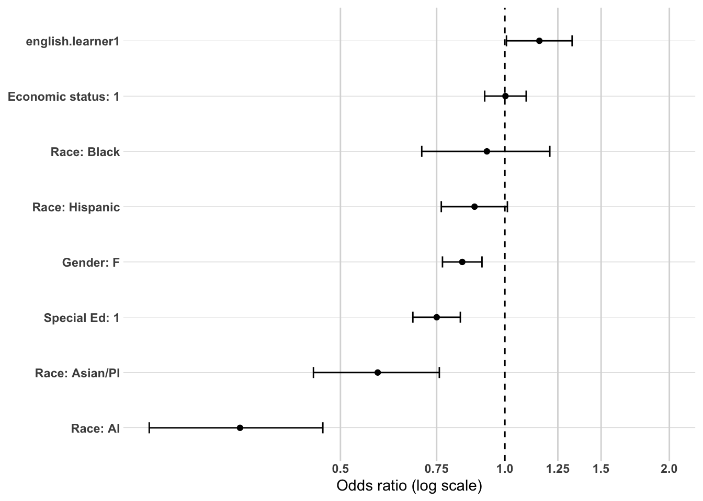
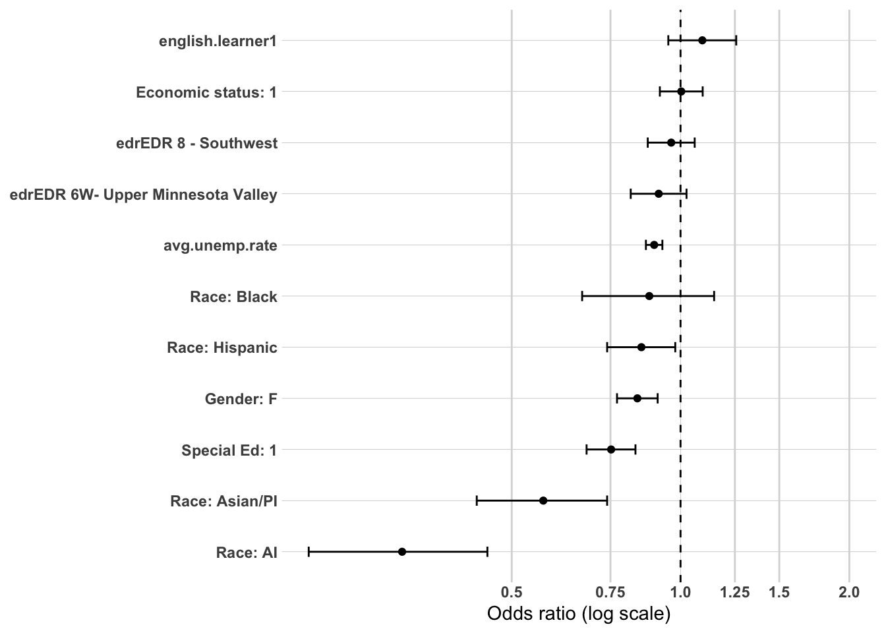
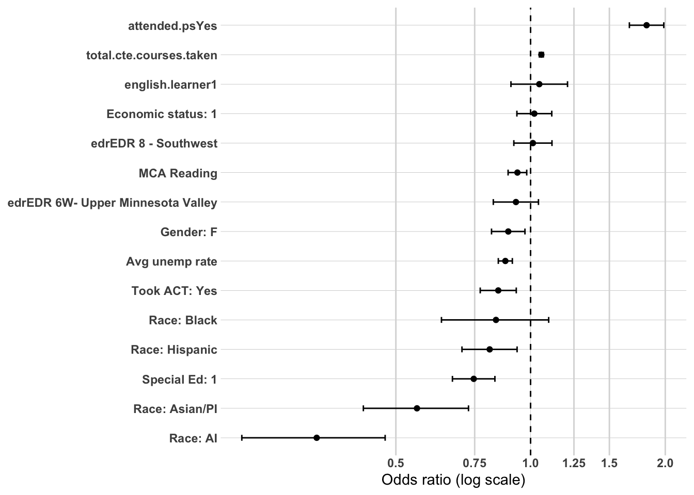
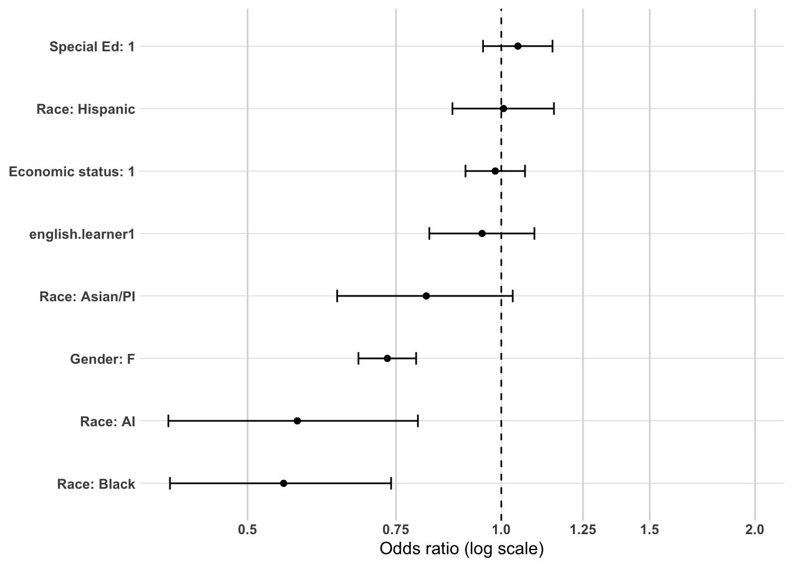
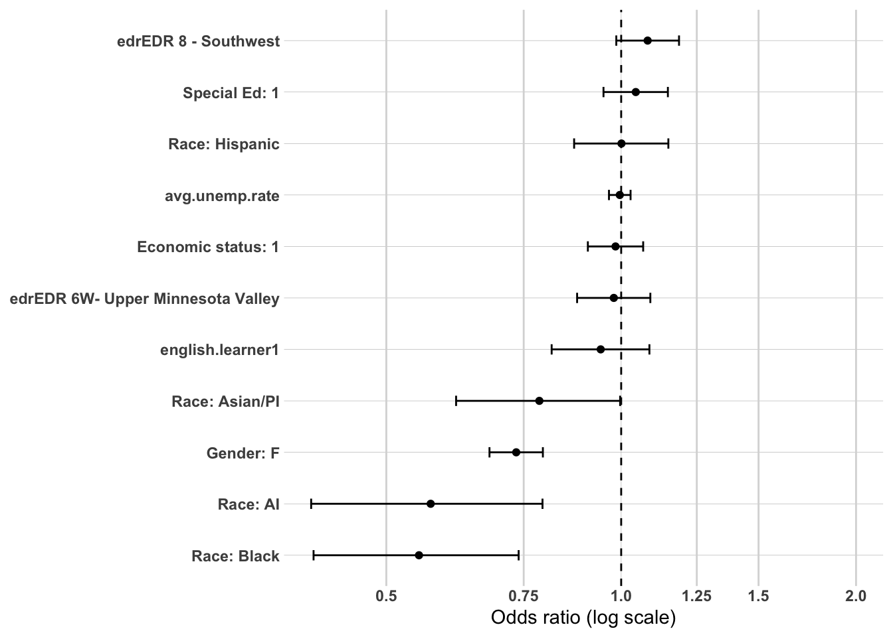
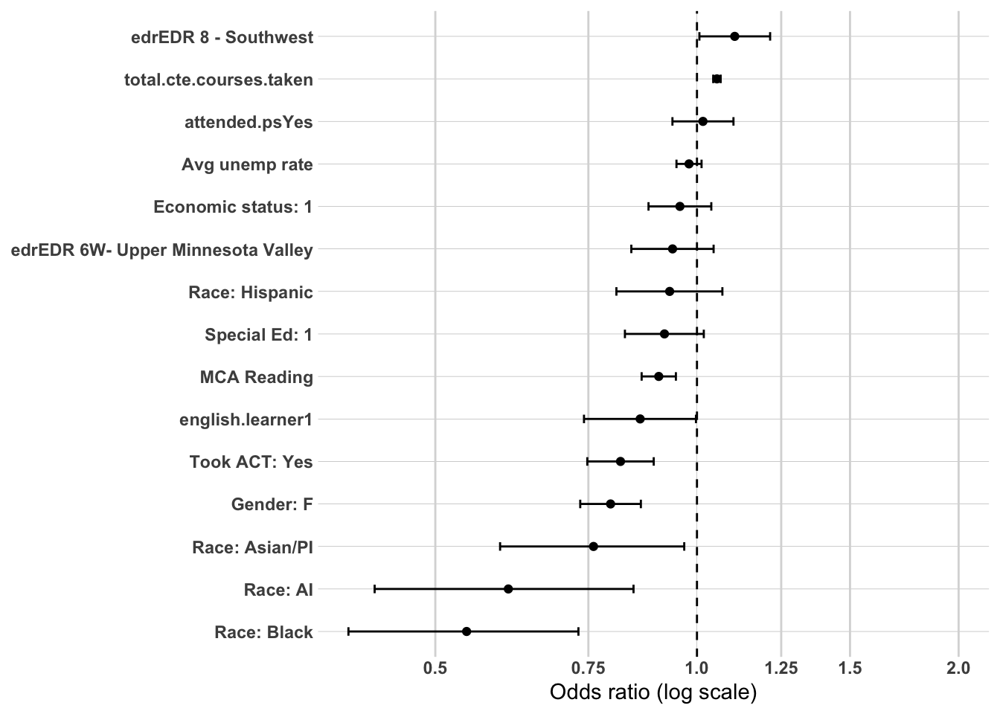
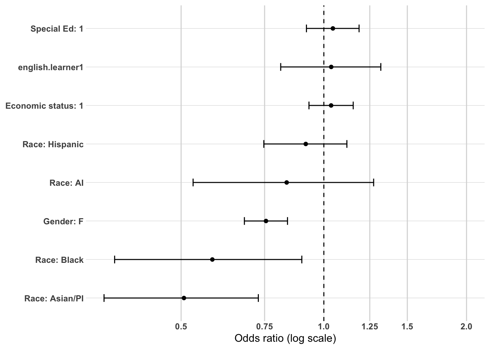
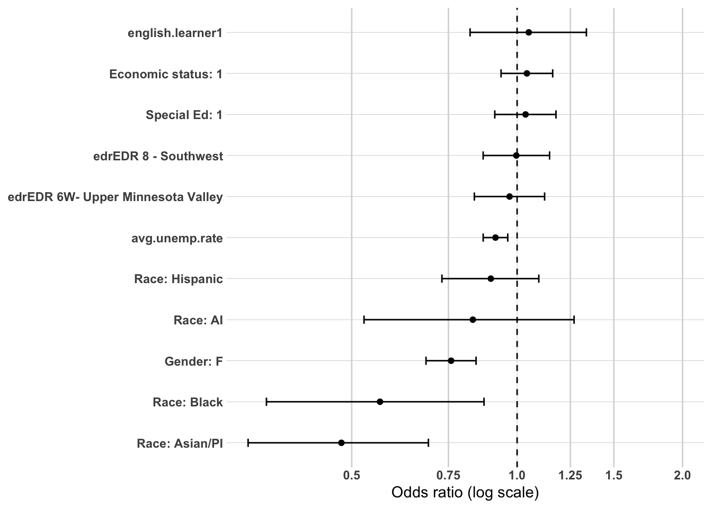
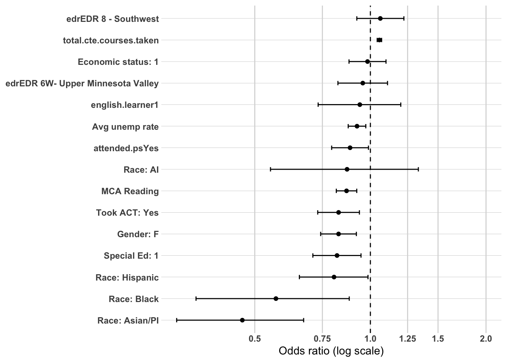

The primary purpose of this supplemental analysis is to examine workforce participation pathways among individuals who did not complete a postsecondary credential. Earlier sections focused on the full population and demonstrated that postsecondary attainment—particularly where and how a credential was earned—was the dominant mechanism associated with sustained regional employment.
This section shifts attention to the population for whom that mechanism does not operate.
Among non–postsecondary graduates, workforce participation pathways cannot be explained by credential depth, institutional sector, or graduation location. Instead, earlier descriptive analyses identified high school career alignment (CTE), structural disadvantage, and local labor market context as central differentiators of workforce outcomes.
To strengthen confidence in those findings, a limited multivariate analysis is conducted using logistic regression. As in the full-population analysis, the goal is not causal inference or prediction, but confirmatory testing. Specifically, this modeling examines whether the strongest tree-based and bivariate relationships remain directionally consistent when key predictors are considered simultaneously.
Logistic regression is used here as a confirmatory tool rather than the primary analytic framework.
Methodology
Study Population
The analytic sample is restricted to individuals who did not complete a postsecondary credential. This restriction isolates workforce dynamics among high school graduates entering the labor market directly.
Outcome Variable
The primary model predicts:
Sustained employment – region (binary outcome)
The dependent variable is coded as:
1 = Sustained WF – region
0 = All other workforce outcomes (including sustained employment – MN outside the region, non-sustained employment, and no MN employment record)
This specification maintains consistency with earlier modeling while isolating mechanisms specific to the non-college population.
Independent Variables
Because postsecondary mechanisms are not applicable in this subgroup, the model focuses on high school preparation, structural background, and local labor market context identified as important in earlier analyses.
Predictors include:
Demographic characteristics
Gender
RaceEthnicity
economic.status
SpecialEdStatus
english.learner
High school and local context
edr
avg.unemp.rate
High school accomplishments
took.ACT
MCA.R
total.cte.courses.taken
Post-secondary
attended.ps
Variables are selected based on:
Strength of association in prior subgroup analyses
Conceptual plausibility within a non-college pathway
Policy relevance
Avoidance of redundancy
Analysis Approach
This multivariate analysis mirrors the structured confirmatory framework used in the full-population models but is adapted to the non-college subgroup.
The dependent variable is a binary indicator of Sustained employment – region.
Time-Based Modeling Strategy
Workforce attachment evolves over time. To capture this dynamic process, models will be estimated separately at:
1 year after high school
5 years after high school
10 years after high school
This staged approach allows examination of how mechanisms change across early, mid-term, and longer-term workforce trajectories.
Year 1: Immediate Labor Market Entry
The 1-year model captures early transition into the labor market. At this stage, high school preparation and career alignment are expected to exert the strongest influence. CTE exposure and intensity may function as immediate workforce anchors, while structural disadvantage may strongly shape early labor market attachment.
Year 5: Stabilization Phase
The 5-year model reflects early career consolidation. At this point, initial preparation effects may attenuate, and differences associated with labor market context and structural disadvantage may become more pronounced. This model evaluates whether early alignment persists or whether structural conditions increasingly shape outcomes.
Year 10: Long-Term Embeddedness
The 10-year model captures longer-term workforce integration. Earlier analyses suggest that local labor market conditions (e.g., wages and unemployment) may become more dominant over time. This specification tests whether contextual economic factors increasingly explain sustained regional employment among non-college graduates as individual preparation effects diminish.
Estimating separate models at each time point allows for:
Evaluation of coefficient stability over time
Assessment of attenuation or amplification of predictors
Identification of shifting mechanisms from individual preparation to structural context
Modeling Strategy
Within each time period, predictors are introduced in a structured sequence:
Model 1: Demographic characteristics (baseline)
Includes demographic variables:
Demographics
Gender
RaceEthnicity
economic.status
SpecialEdStatus
english.learner
Model 2: Add high school accomplishments and local labor market
We will add the following;
High school charateristics
edr
avg.unemp.rate
Model 3 - High school accomplishments and postsecondary orientation
Adds contextual labor market measures:
took.ACT
MCA.R
total.cte.courses.taken
attended.ps
This is the full confirmatory specification.
Evaluation Criteria
Results will be reported using odds ratios and 95% confidence intervals for all predictors, with statistical significance assessed at conventional thresholds (p<0.05, p<0.01, p<0.001). The following model comparison metrics will be reported at each block entry:
Change in -2 log likelihood with associated chi-square test and degrees of freedom, directly testing whether each new block adds statistically significant explanatory power beyond the previous model. Nagelkerke R² and change in Nagelkerke R², providing an interpretable measure of the variance explained by each successive block. AIC, used to assess relative model fit across specifications. Variance inflation factors (VIF) will be reported for all predictors to assess multicollinearity. The Hosmer-Lemeshow goodness of fit test will be reported at each model stage.
Interpretation Framework
This multivariate analysis is structured as a series of theoretically guided hierarchical logistic regression models designed to evaluate mechanisms associated with sustained regional employment among non-college completers. The goal is confirmatory testing of patterns identified in the bivariate analysis rather than prediction or causal inference. Findings will be described as associations holding other included variables constant. No causal claims will be made.
Block 1 establishes the demographic baseline. Associations identified here will be evaluated for direction, magnitude, and statistical significance, and will serve as the benchmark against which coefficient stability and attenuation are assessed in subsequent blocks. Given the weak to modest demographic associations observed in the bivariate analysis, a low Nagelkerke R² is expected at this stage.
Block 2 adds EDR and average county unemployment rate. The primary questions at this stage are whether EDR contributes independent explanatory power after demographic adjustment — and in which direction, given that the full population analysis revealed a reversal of the bivariate EDR pattern once demographic composition was controlled — and whether local unemployment rate retains an independent association after geographic controls are introduced. Coefficient stability of Block 1 predictors will be assessed to confirm that demographic associations are not attributable to geographic or labor market sorting.
Block 3 adds high school accomplishments and postsecondary orientation variables. This block is expected to produce the largest improvement in model fit, consistent with the bivariate evidence identifying CTE course-taking, ACT participation, MCA Reading scores, and postsecondary attendance as the strongest predictors of workforce participation outcomes among non-college completers. The primary questions at this stage are the direction and magnitude of each accomplishment variable, the dose-response character of total CTE courses taken, and the degree to which Block 1 and Block 2 coefficients attenuate with the addition of these variables.
Three specific attenuation patterns will be of particular analytical interest. First, whether the special education status coefficient attenuates or reverses direction once CTE engagement and academic achievement are controlled — as occurred in the full population analysis — which would confirm that the special education bivariate association was largely attributable to the lower academic achievement and higher CTE engagement of that group. Second, whether the gender coefficient attenuates once academic orientation variables are controlled, which would confirm that females’ lower regional employment odds partly reflect their greater academic orientation. Third, whether the EDR 6W and EDR 8 coefficients attenuate once CTE engagement is controlled, which would confirm that the geographic regional employment advantage of those subregions was partly attributable to their higher CTE engagement levels.
Attended.ps is included in Block 3 as a postsecondary orientation indicator rather than as a structural pathway variable. Its expected direction is negative — graduates who attended postsecondary without completing are more likely to be oriented toward statewide rather than regional employment — but its independent contribution is expected to be modest after controlling for the academic orientation variables with which it is correlated.
The non-college completer analysis does not include a Block 4 postsecondary pathway variable, representing a deliberate departure from the full population model structure. Because non- college completers by definition did not earn a postsecondary credential, the credential level and graduation location dimensions that drove the full population Block 4 findings are not applicable here. The attended.ps variable captures the only meaningful postsecondary dimension available for this subgroup and is incorporated into Block 3 for this reason.
Coefficient stability will be evaluated across all three blocks. Variables that show consistent direction and magnitude across model specifications will be interpreted as having robust independent associations with sustained regional employment. Variables that attenuate substantially or reverse direction with the addition of later blocks will be interpreted as having associations that were partially or fully attributable to confounding with variables introduced in those blocks.
Overall conclusions will assess the degree to which the three-mechanism structure — demographic baseline, geographic and labor market context, and high school accomplishments and postsecondary orientation — provides multivariate confirmation of the patterns identified in the bivariate analysis. Particular attention will be given to whether the CTE regional anchoring mechanism and the academic orientation departure mechanism identified throughout the descriptive analysis survive multivariate adjustment among non-college completers specifically.
Prep data
The first thing I need to do is setup my dataset for modeling. I’m going to create the workforce participation into a binary and will use grad.year.1, grad.year.5 and grad.year.10 as my modeling year.
We now have 13,144 individuals to model with 11 variables not including grad.year.5.
Modeling - grad.year.1
Model 1 — Demographic Characteristics (Baseline)
Model 1 establishes the demographic baseline for predicting sustained regional employment at one year post-graduation among non-college completers (N=12,325). The model includes gender, race/ethnicity, economic status, special education status, and English learner status. Variance inflation factors were all well below 2.0 for all predictors, indicating no multicollinearity concerns among the demographic predictors. The Hosmer-Lemeshow goodness of fit test indicates some misfit at the baseline stage (χ²=20.23, df=7, p=0.005), which is expected given the limited explanatory variables included. The model explains a very small proportion of variance in the outcome (Nagelkerke R²=0.013), confirming that demographic characteristics alone account for little of the variation in regional workforce retention among non-college completers at year 1.
Gender Females show significantly lower odds of sustained regional employment compared to males (OR=0.836, 95% CI [0.769, 0.908], p<0.001), confirming the bivariate finding that males are more likely to achieve regional employment in the first post-exit year. This is among the most statistically robust findings in the baseline model.
Race/Ethnicity Relative to White graduates, American Indian graduates show the lowest odds of sustained regional employment by a substantial margin (OR=0.327, 95% CI [0.223, 0.464], p<0.001), followed by Asian/PI graduates (OR=0.585, 95% CI [0.446, 0.759], p<0.001). Black graduates show no significant difference from White graduates (OR=0.927, 95% CI [0.704, 1.208], p=0.581), nor do Hispanic graduates (OR=0.880, 95% CI [0.765, 1.011], p=0.072), though the Hispanic association approaches conventional significance thresholds. Small sample sizes for American Indian, Asian/PI, and Black graduates warrant cautious interpretation of these estimates.
Economic Status Economically disadvantaged graduates show no significant difference in odds of sustained regional employment compared to non-disadvantaged graduates (OR=1.002, 95% CI [0.918, 1.094], p=0.959). Economic status contributes no independent explanatory power at the demographic baseline, consistent with the counterintuitive and weak economic status associations observed throughout the bivariate analysis for this subgroup.
Special Education Status Special education graduates show significantly lower odds of sustained regional employment compared to non-special education graduates (OR=0.750, 95% CI [0.678, 0.829], p<0.001). This is a notable departure from the full population Model 1 finding, where special education status was positively associated with regional employment at the demographic baseline. Among non-college completers specifically, special education graduates show reduced regional employment odds even before high school accomplishment variables are introduced, suggesting the relationship between special education status and regional employment operates differently in this subgroup than in the full population.
English Learner Status English learners show significantly higher odds of sustained regional employment compared to non-English learners (OR=1.156, 95% CI [1.007, 1.328], p=0.040). This positive and significant association is counterintuitive and contrasts with the full population finding where English learner status was non-significant after demographic controls. It likely reflects the high concentration of English learner graduates in agricultural and food processing industries in Southwest Minnesota — sectors that provide regional employment but are often not captured as strong labor market outcomes in broader analyses. This finding warrants careful attention in subsequent models to assess whether it persists or attenuates when high school accomplishment variables are introduced.
Summary The demographic baseline model for non-college completers confirms that gender, American Indian and Asian/PI race/ethnicity, and special education status are the most robust demographic predictors of sustained regional employment at year 1. Economic status contributes no independent explanatory power. The positive English learner association is an analytically interesting departure from the full population findings and will require monitoring across subsequent model specifications. The very low Nagelkerke R² (0.013) confirms that demographic characteristics alone explain little of the variation in regional workforce retention, establishing the need for the high school characteristics and accomplishment variables in subsequent blocks.
or_plot <-tidy(model1, conf.int =TRUE, exponentiate =TRUE) %>%filter(term !="(Intercept)") %>%mutate(# Make labels nicer (edit these replacements to match your exact factor labels)term =str_replace_all(term, c("RaceEthnicity"="Race: ","economic.status"="Economic status: ","Gender"="Gender: ","SpecialEdStatus"="Special Ed: ","Dem_Desc"="Dem_Desc: " )),# Put most important effects near the top (optional: tweak ordering later)term =fct_reorder(term, estimate) )ggplot(or_plot, aes(x = estimate, y = term)) +geom_vline(xintercept =1, linetype ="dashed") +geom_vline(xintercept =c(0.5, 0.75, 1.25, 1.5, 2),color ="grey85") +geom_point() +geom_errorbar(aes(xmin = conf.low, xmax = conf.high),orientation ="y",width =0.2 ) +scale_x_log10(breaks =c(0.5, 0.75, 1, 1.25, 1.5, 2),labels =c("0.5", "0.75", "1.0", "1.25", "1.5", "2.0") ) + theme_line +labs(x ="Odds ratio (log scale)",y =NULL )

Model 2 — High School Characteristics and Local Labor Market
Model 2 adds EDR and average county unemployment rate to the demographic baseline, maintaining the same sample of 12,325 individuals. VIF values remained well below 2.0 for all predictors, confirming no multicollinearity concerns with the addition of these variables. Model fit improved meaningfully over the demographic baseline (ΔAIC=-38.0, Nagelkerke R²=0.018), and the Hosmer-Lemeshow test improved substantially (χ²=10.00, df=8, p=0.265), indicating acceptable model fit at this stage.
Stability of Demographic Coefficients Demographic coefficients from Model 1 show strong stability with the addition of EDR and unemployment rate. Gender (OR=0.838), American Indian race/ethnicity (OR=0.319), Asian/PI (OR=0.569), special education status (OR=0.752), and economic status (OR=1.003) all remain virtually unchanged from their Model 1 estimates. The English learner association attenuates from OR=1.156 (p=0.040) in Model 1 to OR=1.094 (p=0.208) in Model 2 and loses statistical significance, suggesting that the positive English learner association observed at baseline was partially attributable to geographic concentration of English learner graduates in specific EDRs or higher-unemployment communities. Hispanic graduates emerge as significantly different from White graduates in Model 2 (OR=0.852, p=0.024), having only approached significance in Model 1, suggesting some geographic confounding suppressed this association at baseline.
EDR Neither EDR 6W Upper Minnesota Valley (OR=0.914, p=0.125) nor EDR 8 Southwest (OR=0.962, p=0.437) shows a significant association with sustained regional employment at year 1 relative to EDR 6E Southwest Central. This is the opposite direction from the full population Model 2 finding, where EDR 6W and EDR 8 showed significantly higher odds of regional employment after demographic adjustment. Among non-college completers specifically, the subregional differences in regional employment that were apparent in the bivariate analysis do not survive demographic adjustment at year 1, suggesting that the bivariate EDR pattern in this subgroup was largely attributable to demographic composition differences across subregions rather than independent geographic effects.
Average Unemployment Rate Average county unemployment rate shows a significant and substantively meaningful negative association with sustained regional employment at year 1 (OR=0.897, 95% CI [0.867, 0.928], p<0.001). This is a notable departure from the full population Model 2 finding where unemployment rate was non-significant. Among non-college completers, graduates from higher-unemployment counties show meaningfully lower odds of sustained regional employment at year 1 — each one-unit increase in average unemployment rate is associated with approximately a 10% reduction in the odds of regional employment. This finding is consistent with a push dynamic operating in the opposite direction from what the bivariate analysis suggested: rather than pushing workers toward statewide employment (as observed for the full population), higher local unemployment among non-college completers appears to suppress regional employment attachment in the first post-exit year, likely because fewer immediate regional employment opportunities are available for workers entering the labor market without credentials in higher-unemployment communities.
Summary The addition of EDR and average unemployment rate produces a meaningful improvement in model fit over the demographic baseline (ΔAIC=-38.0), with average county unemployment rate emerging as the sole significant geographic and labor market predictor. EDR contributes no independent explanatory power after demographic adjustment at year 1, a departure from the full population findings. The stability of demographic coefficients across Models 1 and 2 confirms that the gender, race/ethnicity, and special education status associations identified at baseline are robust to geographic and labor market controls. The attenuation of the English learner coefficient to non-significance suggests its Model 1 association was partly attributable to geographic concentration. The still very low Nagelkerke R² (0.018) reflects the need for the high school accomplishment and postsecondary orientation variables in Block 3 to meaningfully account for the observed variation in regional workforce retention among non-college completers.
or_plot <-tidy(model2, conf.int =TRUE, exponentiate =TRUE) %>%filter(term !="(Intercept)") %>%mutate(# Make labels nicer (edit these replacements to match your exact factor labels)term =str_replace_all(term, c("RaceEthnicity"="Race: ","economic.status"="Economic status: ","SpecialEdStatus"="Special Ed: ","pseo.participant"="PSEO: ","cte.achievement"="CTE: ","MCA.R"="MCA Reading","MCA.M"="MCA Math","Dem_Desc"="Dem_Desc: ","Gender"="Gender: ","took.ACT"="Took ACT: " )),# Put most important effects near the top (optional: tweak ordering later)term =fct_reorder(term, estimate) )ggplot(or_plot, aes(x = estimate, y = term)) +geom_vline(xintercept =1, linetype ="dashed") +geom_vline(xintercept =c(0.5, 0.75, 1.25, 1.5, 2),color ="grey85") +geom_point() +geom_errorbar(aes(xmin = conf.low, xmax = conf.high),orientation ="y",width =0.2 ) +scale_x_log10(breaks =c(0.5, 0.75, 1, 1.25, 1.5, 2),labels =c("0.5", "0.75", "1.0", "1.25", "1.5", "2.0") ) + theme_line +labs(x ="Odds ratio (log scale)",y =NULL )

Model 3 — High School Accomplishments and Postsecondary Orientation
Model 3 adds took.ACT, MCA.R, total.cte.courses.taken, and attended.ps to the previous model, maintaining the same sample of 12,325 individuals. The addition of these variables produces the largest improvement in model fit observed across any block entry (ΔAIC=-288.0, Nagelkerke R²=0.052), confirming that high school accomplishments and postsecondary orientation are the most powerful predictors of sustained regional employment at year 1 among non-college completers. VIF values remained well below 2.0 for all predictors, indicating no multicollinearity concerns. The Hosmer-Lemeshow test indicates good model fit (χ²=5.83, df=8, p=0.666), a substantial improvement over Model 2.
Stability and Attenuation of Previous Coefficients The addition of high school accomplishment and postsecondary orientation variables produces meaningful changes in several earlier coefficients, revealing important confounding patterns.
Gender attenuates modestly (OR from 0.838 to 0.892, p=0.009), remaining significant. Some of the female disadvantage in regional employment observed in Models 1 and 2 is explained by females being more likely to take the ACT, score higher on MCA Reading, and attend postsecondary — all of which are associated with non-regional employment at year 1. The gender association remains meaningful and independent of these academic orientation factors.
Special education status shows virtually no attenuation (OR from 0.752 to 0.746, p<0.001), remaining strongly significant and negative across all three model specifications. This stability is a notable departure from the full population analysis where the special education coefficient reversed direction once academic achievement and CTE engagement were controlled. Among non-college completers specifically, the negative special education association with regional employment is not attributable to lower CTE engagement or academic achievement — it reflects an independent effect of special education status on regional workforce attachment that persists throughout all model specifications.
English learner status, which attenuated to non-significance in Model 2, remains non-significant in Model 3 (OR=1.046, p=0.546). The positive English learner association observed at the Model 1 baseline is fully explained by the combination of geographic concentration and academic orientation differences captured in Models 2 and 3.
Hispanic graduates emerge as significantly different from White graduates in Model 3 (OR=0.810, p=0.004), strengthening slightly from Model 2 (OR=0.852). The persistence and modest strengthening of this association after controlling for academic achievement and CTE engagement suggests that the Hispanic regional employment deficit reflects factors beyond academic preparation and pathway sorting among non-college completers.
Average county unemployment rate strengthens slightly (OR from 0.897 to 0.878, p<0.001), confirming its robust and independent negative association with regional employment at year 1 after full controls.
EDR remains non-significant in Model 3, with EDR 8 Southwest showing a slight positive shift (OR=1.012, p=0.811) while EDR 6W Upper Minnesota Valley remains modestly negative (OR=0.927, p=0.204). The absence of significant EDR effects at year 1 among non-college completers is consistent across all model specifications.
ACT Participation ACT takers show significantly lower odds of sustained regional employment than non-ACT takers (OR=0.847, 95% CI [0.772, 0.929], p<0.001), confirming the bivariate finding that ACT participation signals academic orientation away from regional employment even among graduates who ultimately do not complete a postsecondary credential. This association holds after controlling for MCA Reading score, CTE course-taking, and postsecondary attendance, indicating that ACT participation captures an independent college preparedness dimension beyond academic achievement alone.
MCA Reading Higher MCA Reading proficiency is associated with significantly lower odds of sustained regional employment (OR=0.935, 95% CI [0.891, 0.980], p=0.006), confirming that academic achievement as measured by reading proficiency is associated with non-regional employment at year 1. The effect is modest in magnitude but consistent in direction with the bivariate evidence, and it survives adjustment for all other accomplishment and orientation variables in the model.
Total CTE Courses Taken Total CTE courses taken shows the strongest and most substantively important positive association in Model 3 (OR=1.057, 95% CI [1.046, 1.068], p<0.001), confirming the dose-response regional anchoring pattern identified throughout the bivariate analysis. Each additional CTE course taken is associated with approximately a 5.7% increase in the odds of sustained regional employment at year 1, holding all other variables constant. This association is the most precisely estimated in the model and provides definitive multivariate confirmation that CTE course volume is the dominant high school accomplishment predictor of regional workforce entry among non-college completers.
Postsecondary Attendance Postsecondary attendance shows the largest single odds ratio in Model 3 (OR=1.817, 95% CI [1.663, 1.985], p<0.001). This is a striking and initially counterintuitive finding — graduates who attended postsecondary without completing show nearly twice the odds of sustained regional employment at year 1 compared to those who never attended. However this finding requires careful contextual interpretation. At year 1, postsecondary attendees who have not yet graduated are still actively enrolled and will appear as non-college completers in the observation window only if they ultimately fail to complete — but at year 1 many are simply in the early stages of enrollment and working concurrently in regional employment. The strong positive association therefore likely reflects the early labor market engagement of students who combine regional work with postsecondary attendance rather than a genuine regional anchoring advantage of postsecondary attendance per se. This interpretation is consistent with the declining attended.ps association observed across years 1 through 5 in the bivariate analysis and warrants direct comparison with the grad.year.5 model results.
Summary The addition of high school accomplishment and postsecondary orientation variables produces the largest improvement in model fit of any block entry (ΔAIC=-288.0, ΔNagelkerke R²=+0.034), confirming these variables as the most powerful predictors of sustained regional employment at year 1 among non-college completers. The results reveal the two-pathway structure in full multivariate relief: CTE course-taking is strongly and positively associated with regional employment in a clear dose-response pattern, while academic orientation indicators — ACT participation and MCA Reading proficiency — are significantly and independently associated with lower regional employment odds. The postsecondary attendance association is large and positive at year 1 but likely reflects concurrent enrollment patterns rather than a durable regional anchoring effect, and requires direct comparison with the year 5 results to properly interpret. Gender, American Indian and Asian/PI race/ethnicity, Hispanic ethnicity, and special education status all maintain significant independent associations after full controls, confirming that these demographic disparities in regional workforce entry are not fully explained by differences in academic preparation or CTE pathway engagement.
or_plot <-tidy(model3, conf.int =TRUE, exponentiate =TRUE) %>%filter(term !="(Intercept)") %>%mutate(# Make labels nicer (edit these replacements to match your exact factor labels)term =str_replace_all(term, c("RaceEthnicity"="Race: ","economic.status"="Economic status: ","SpecialEdStatus"="Special Ed: ","pseo.participant"="PSEO: ","cte.achievement"="CTE: ","MCA.R"="MCA Reading","MCA.M"="MCA Math","Dem_Desc"="Dem_Desc: ","Gender"="Gender: ","took.ACT"="Took ACT: ","avg.unemp.rate"="Avg unemp rate","avg.wages.pct.state"="Avg wages pct state" )),# Put most important effects near the top (optional: tweak ordering later)term =fct_reorder(term, estimate) )ggplot(or_plot, aes(x = estimate, y = term)) +geom_vline(xintercept =1, linetype ="dashed") +geom_vline(xintercept =c(0.5, 0.75, 1.25, 1.5, 2),color ="grey85") +geom_point() +geom_errorbar(aes(xmin = conf.low, xmax = conf.high),orientation ="y",width =0.2 ) +scale_x_log10(breaks =c(0.5, 0.75, 1, 1.25, 1.5, 2),labels =c("0.5", "0.75", "1.0", "1.25", "1.5", "2.0") ) + theme_line +labs(x ="Odds ratio (log scale)",y =NULL )

Modeling - grad.year.5
Model 1 — Demographic Characteristics (Baseline), Year 5
Model 1 establishes the demographic baseline for predicting sustained regional employment at five years post-graduation among non-college completers (N=13,144). The larger sample relative to the year 1 model (N=12,325) reflects the longer observation window available for earlier cohorts at year 5. Variance inflation factors were all well below 2.0 for all predictors, indicating no multicollinearity concerns. The Hosmer-Lemeshow test indicates acceptable model fit at the baseline stage (χ²=7.84, df=5, p=0.165). The model explains a very small proportion of variance in the outcome (Nagelkerke R²=0.011), confirming that demographic characteristics alone account for little of the variation in regional workforce retention at year 5.
Gender Females show significantly lower odds of sustained regional employment compared to males (OR=0.732, 95% CI [0.677, 0.792], p<0.001). The gender association is meaningfully stronger at year 5 than at year 1 (OR=0.836), consistent with the bivariate finding that the gender gap in regional employment widens over time among non-college completers. This is the most statistically robust finding in the year 5 baseline model.
Race/Ethnicity Relative to White graduates, Black graduates show the lowest odds of sustained regional employment at year 5 (OR=0.552, 95% CI [0.404, 0.740], p<0.001), followed by American Indian graduates (OR=0.573, 95% CI [0.403, 0.796], p=0.001). These represent a notable shift from year 1, where American Indian graduates showed the most adverse profile (OR=0.327) and Black graduates were non-significant. By year 5, Black graduates emerge as a strongly disadvantaged group in regional employment while the American Indian association attenuates somewhat, suggesting different trajectories of labor market sorting across these groups over time. Asian/PI graduates approach but do not reach conventional significance thresholds (OR=0.815, p=0.094), a weakening from the significant year 1 association (OR=0.585). Hispanic graduates show no significant difference from White graduates (OR=1.006, p=0.933), consistent with their year 1 non-significance at baseline.
Economic Status Economically disadvantaged graduates show no significant difference in odds of sustained regional employment compared to non-disadvantaged graduates (OR=0.984, p=0.691), consistent with the year 1 baseline finding and the weak economic status associations observed throughout the bivariate analysis.
Special Education Status Special education graduates show no significant difference from non-special education graduates at year 5 (OR=1.046, p=0.350), a marked departure from the significant negative association observed at year 1 (OR=0.750). This reversal in direction and loss of significance from year 1 to year 5 is an analytically important finding — the special education disadvantage in regional employment entry at year 1 does not persist as a baseline demographic disadvantage by year 5, suggesting that special education graduates who do achieve regional employment stabilize within it over time at rates comparable to non-special education graduates.
English Learner Status English learners show no significant difference in odds of sustained regional employment compared to non-English learners (OR=0.949, p=0.473), consistent with the non-significant associations observed after geographic and labor market controls in the year 1 models.
Summary The year 5 demographic baseline reveals a meaningfully different demographic profile than the year 1 baseline, with several important shifts. Gender emerges as a stronger predictor at year 5 than year 1, consistent with the widening gender gap in the bivariate analysis. Black graduates shift from non-significant at year 1 to a strongly significant negative association at year 5, while American Indian graduates attenuate somewhat. Special education status, which was a significant negative predictor at year 1, shows no significant association at year 5 in either direction — a reversal that will be analytically important to track through Models 2 and 3. Economic status and English learner status remain non-significant at baseline consistent with year 1. The very low Nagelkerke R² (0.011) confirms that demographic characteristics alone explain little of the variation in regional workforce retention at year 5, establishing the need for subsequent blocks.
or_plot <-tidy(model1, conf.int =TRUE, exponentiate =TRUE) %>%filter(term !="(Intercept)") %>%mutate(# Make labels nicer (edit these replacements to match your exact factor labels)term =str_replace_all(term, c("RaceEthnicity"="Race: ","economic.status"="Economic status: ","Gender"="Gender: ","SpecialEdStatus"="Special Ed: ","Dem_Desc"="Dem_Desc: " )),# Put most important effects near the top (optional: tweak ordering later)term =fct_reorder(term, estimate) )ggplot(or_plot, aes(x = estimate, y = term)) +geom_vline(xintercept =1, linetype ="dashed") +geom_vline(xintercept =c(0.5, 0.75, 1.25, 1.5, 2),color ="grey85") +geom_point() +geom_errorbar(aes(xmin = conf.low, xmax = conf.high),orientation ="y",width =0.2 ) +scale_x_log10(breaks =c(0.5, 0.75, 1, 1.25, 1.5, 2),labels =c("0.5", "0.75", "1.0", "1.25", "1.5", "2.0") ) + theme_line +labs(x ="Odds ratio (log scale)",y =NULL )

Model 2 — High School Characteristics and Local Labor Market, Year 5
Model 2 adds EDR and average county unemployment rate to the demographic baseline, maintaining the same sample of 13,144 individuals. VIF values remained well below 2.0 for all predictors, confirming no multicollinearity concerns. Model fit showed virtually no improvement over the demographic baseline (ΔAIC=+1.0, Nagelkerke R²=0.011), and the Hosmer-Lemeshow test indicates acceptable model fit (χ²=8.75, df=8, p=0.364).
Stability of Demographic Coefficients Demographic coefficients from Model 1 show near-perfect stability with the addition of EDR and unemployment rate. Gender (OR=0.734), American Indian (OR=0.570), Black (OR=0.551), special education status (OR=1.044), economic status (OR=0.983), and English learner status (OR=0.941) all remain virtually unchanged from their Model 1 estimates. Asian/PI graduates shift from non-significant in Model 1 (OR=0.815, p=0.094) to marginally significant in Model 2 (OR=0.785, p=0.050), a modest change likely reflecting slight geographic confounding for this group. The overall stability of demographic coefficients confirms that the demographic associations identified at baseline are not attributable to geographic sorting or local labor market conditions.
EDR Neither EDR 6W Upper Minnesota Valley (OR=0.978, p=0.693) nor EDR 8 Southwest (OR=1.081, p=0.098) shows a significant association with sustained regional employment at year 5 after demographic adjustment. EDR 8 Southwest approaches but does not reach conventional significance, showing a modest positive direction consistent with the full population finding but falling short among the non-college completer subgroup. The absence of significant EDR effects at year 5 is consistent with the year 1 finding and confirms that subregional differences in regional employment among non-college completers are largely attributable to demographic composition rather than independent geographic effects.
Average Unemployment Rate Average county unemployment rate shows no significant association with sustained regional employment at year 5 (OR=0.996, p=0.800). This is a striking contrast with the year 1 finding, where unemployment rate was a strong and significant negative predictor (OR=0.878, p<0.001). The disappearance of the unemployment rate effect by year 5 suggests that local labor market conditions primarily shape the timing and immediacy of regional employment entry rather than long-term regional workforce attachment among non-college completers. By year 5, those who will achieve regional employment have largely done so regardless of the local unemployment environment they graduated into, and those who have not are not meaningfully differentiated by county unemployment rate.
Summary The addition of EDR and average unemployment rate produces essentially no improvement in model fit at year 5 (ΔAIC=+1.0), a dramatically weaker contribution than observed at year 1 (ΔAIC=-38.0). This is the most consequential cross-year difference observed thus far in the modeling sequence. Local labor market conditions are meaningfully associated with regional employment entry at year 1 but carry no independent explanatory power by year 5, suggesting their influence is transitory rather than structural. EDR contributes no independent explanatory power at either time point among non-college completers. The stability of demographic coefficients confirms the robustness of the baseline demographic associations. The unchanged Nagelkerke R² (0.011) from Model 1 confirms that geographic and labor market variables add nothing beyond demographics at year 5, making the high school accomplishment and postsecondary orientation variables in Block 3 the critical test of explanatory power for this subgroup at the five-year horizon.
or_plot <-tidy(model2, conf.int =TRUE, exponentiate =TRUE) %>%filter(term !="(Intercept)") %>%mutate(# Make labels nicer (edit these replacements to match your exact factor labels)term =str_replace_all(term, c("RaceEthnicity"="Race: ","economic.status"="Economic status: ","SpecialEdStatus"="Special Ed: ","pseo.participant"="PSEO: ","cte.achievement"="CTE: ","MCA.R"="MCA Reading","MCA.M"="MCA Math","Dem_Desc"="Dem_Desc: ","Gender"="Gender: ","took.ACT"="Took ACT: " )),# Put most important effects near the top (optional: tweak ordering later)term =fct_reorder(term, estimate) )ggplot(or_plot, aes(x = estimate, y = term)) +geom_vline(xintercept =1, linetype ="dashed") +geom_vline(xintercept =c(0.5, 0.75, 1.25, 1.5, 2),color ="grey85") +geom_point() +geom_errorbar(aes(xmin = conf.low, xmax = conf.high),orientation ="y",width =0.2 ) +scale_x_log10(breaks =c(0.5, 0.75, 1, 1.25, 1.5, 2),labels =c("0.5", "0.75", "1.0", "1.25", "1.5", "2.0") ) + theme_line +labs(x ="Odds ratio (log scale)",y =NULL )

Model 3 — High School Accomplishments and Postsecondary Orientation, Year 5
Model 3 adds took.ACT, MCA.R, total.cte.courses.taken, and attended.ps to the previous model, maintaining the same sample of 13,144 individuals. The addition of these variables produces the largest improvement in model fit observed across any block entry at year 5 (ΔAIC=-167.0, Nagelkerke R²=0.030), confirming that high school accomplishments and postsecondary orientation are the dominant predictors of sustained regional employment at five years post-graduation among non-college completers. VIF values remained well below 2.0 for all predictors, indicating no multicollinearity concerns. The Hosmer-Lemeshow test indicates good model fit (χ²=4.77, df=8, p=0.782).
Stability and Attenuation of Previous Coefficients The addition of high school accomplishment and postsecondary orientation variables produces meaningful changes in several earlier coefficients, with patterns that differ in important ways from the year 1 findings.
Gender attenuates modestly (OR from 0.734 to 0.795, p<0.001), remaining strongly significant. As at year 1, some of the female disadvantage in regional employment is explained by females being more likely to take the ACT and score higher on MCA Reading. The persistence of a meaningful gender association after full controls confirms an independent effect of gender on regional workforce retention at year 5 that is not fully explained by academic orientation or CTE engagement.
Special education status attenuates from a non-significant positive direction in Models 1 and 2 (OR=1.046, OR=1.044) to a non-significant negative direction in Model 3 (OR=0.917, p=0.106). The direction reversal mirrors the full population finding — once CTE engagement and academic achievement are controlled, the special education coefficient shifts negative — but does not reach significance at year 5 among non-college completers. This contrasts with the year 1 finding where special education was significantly negative across all three models, suggesting that the independent special education disadvantage in regional employment is more acute at labor market entry than at the five-year horizon.
English learner status shifts from non-significant in Models 1 and 2 to a significant negative association in Model 3 (OR=0.860, p=0.047). This emergence of a significant English learner effect only after controlling for high school accomplishments is analytically interesting — it suggests that English learners’ academic and CTE engagement patterns were suppressing a genuine underlying disadvantage in regional employment that becomes visible once those confounds are removed.
Hispanic graduates remain non-significant in Model 3 (OR=0.930, p=0.312), consistent across all year 5 model specifications. This contrasts with the year 1 finding where Hispanic graduates showed a significant negative association in Model 3, suggesting that whatever Hispanic disadvantage exists in regional employment entry attenuates by year 5.
EDR 8 Southwest emerges as a significant positive predictor in Model 3 (OR=1.105, p=0.036), having only approached significance in Model 2. Once high school accomplishment differences across subregions are controlled, EDR 8 graduates show modestly higher odds of regional employment than EDR 6E graduates at year 5 — consistent with the direction observed in the full population analysis and suggesting a subregional anchoring effect that is masked by composition differences until accomplishment variables are introduced.
Average unemployment rate remains non-significant in Model 3 (OR=0.979, p=0.215), confirming the year 5 pattern established in Model 2 — local labor market conditions do not independently predict regional employment at the five-year horizon among non-college completers.
ACT Participation ACT takers show significantly lower odds of sustained regional employment than non-ACT takers at year 5 (OR=0.817, 95% CI [0.748, 0.892], p<0.001), strengthening modestly from the year 1 association (OR=0.847). The growing ACT participation disadvantage in regional employment from year 1 to year 5 is consistent with the bivariate finding that the academic orientation departure mechanism becomes more pronounced over time — academically oriented non-completers are increasingly sorted away from regional employment as careers develop.
MCA Reading Higher MCA Reading proficiency is associated with significantly lower odds of sustained regional employment at year 5 (OR=0.904, 95% CI [0.864, 0.946], p<0.001), strengthening from the year 1 association (OR=0.935). The growing MCA Reading effect from year 1 to year 5 confirms that academic achievement increasingly differentiates regional from non-regional employment trajectories over time, consistent with higher-achieving non-completers progressively sorting toward statewide employment or geographic departure as their careers develop.
Total CTE Courses Taken Total CTE courses taken shows a strong, significant, and precisely estimated positive association with sustained regional employment at year 5 (OR=1.054, 95% CI [1.044, 1.065], p<0.001). The magnitude is virtually identical to the year 1 association (OR=1.057), confirming that the CTE dose-response regional anchoring effect is not only present at labor market entry but fully maintained at the five-year horizon. Each additional CTE course taken is associated with approximately a 5.4% increase in the odds of sustained regional employment at year 5, holding all other variables constant. The stability of this association across both time points is the single most important cross-year finding in the multivariate analysis — CTE course volume is equally powerful as a predictor of regional employment at year 1 and year 5, confirming a durable rather than transitory regional anchoring mechanism.
Postsecondary Attendance Postsecondary attendance shows no significant association with sustained regional employment at year 5 (OR=1.016, 95% CI [0.937, 1.102], p=0.701). This is the most analytically important and cleanest cross-year contrast in the entire model — the large positive association at year 1 (OR=1.817, p<0.001) collapses entirely to a near-null association at year 5 (OR=1.016, p=0.701). This confirms the interpretation offered in the year 1 model writeup: the positive attended.ps association at year 1 reflected concurrent enrollment and regional work patterns rather than a genuine regional anchoring effect of postsecondary attendance. By year 5, once the concurrent enrollment ambiguity resolves, postsecondary attendance carries no independent association with regional employment among non-college completers. Students who attended postsecondary without completing are neither more nor less likely to achieve sustained regional employment at year 5 than those who never attended, once academic orientation and CTE engagement are controlled.
Summary The addition of high school accomplishment and postsecondary orientation variables produces the largest improvement in model fit at year 5 (ΔAIC=-167.0, ΔNagelkerke R²=+0.019), confirming these variables as the dominant predictors of sustained regional employment among non-college completers at the five-year horizon. The year 5 Model 3 results provide clean and compelling multivariate confirmation of the two-pathway structure identified throughout the descriptive analysis. Total CTE courses taken is the strongest positive predictor of regional employment with a stable dose-response association across both time points. ACT participation and MCA Reading are the strongest negative predictors, with both associations strengthening from year 1 to year 5 as the academic orientation departure mechanism becomes more entrenched over time. The collapse of the attended.ps association from a large positive effect at year 1 to a null effect at year 5 is the most analytically decisive cross- year finding, cleanly resolving the concurrent enrollment ambiguity and confirming that postsecondary attendance without completion carries no durable regional anchoring advantage. Gender, Black race/ethnicity, and American Indian race/ethnicity maintain significant independent associations after full controls, while English learner status emerges as a significant negative predictor only after accomplishment variables are introduced — a pattern suggesting that English learner disadvantage in regional employment at year 5 is partially masked by higher CTE engagement among this group.
or_plot <-tidy(model3, conf.int =TRUE, exponentiate =TRUE) %>%filter(term !="(Intercept)") %>%mutate(# Make labels nicer (edit these replacements to match your exact factor labels)term =str_replace_all(term, c("RaceEthnicity"="Race: ","economic.status"="Economic status: ","SpecialEdStatus"="Special Ed: ","pseo.participant"="PSEO: ","cte.achievement"="CTE: ","MCA.R"="MCA Reading","MCA.M"="MCA Math","Dem_Desc"="Dem_Desc: ","Gender"="Gender: ","took.ACT"="Took ACT: ","avg.unemp.rate"="Avg unemp rate","avg.wages.pct.state"="Avg wages pct state" )),# Put most important effects near the top (optional: tweak ordering later)term =fct_reorder(term, estimate) )ggplot(or_plot, aes(x = estimate, y = term)) +geom_vline(xintercept =1, linetype ="dashed") +geom_vline(xintercept =c(0.5, 0.75, 1.25, 1.5, 2),color ="grey85") +geom_point() +geom_errorbar(aes(xmin = conf.low, xmax = conf.high),orientation ="y",width =0.2 ) +scale_x_log10(breaks =c(0.5, 0.75, 1, 1.25, 1.5, 2),labels =c("0.5", "0.75", "1.0", "1.25", "1.5", "2.0") ) + theme_line +labs(x ="Odds ratio (log scale)",y =NULL )

Modeling - grad.year.10
Model 1 — Demographic Characteristics (Baseline), Year 10
Model 1 establishes the demographic baseline for predicting sustained regional employment at ten years post-graduation among non-college completers (N=7,766). The substantially smaller sample relative to years 1 and 5 reflects the restricted observation window available for earlier cohorts only at year 10, and warrants some caution in interpreting coefficient precision for smaller subgroups such as American Indian, Asian/PI, and Black graduates. Variance inflation factors were all well below 2.0 for all predictors, indicating no multicollinearity concerns. The Hosmer-Lemeshow test indicates acceptable model fit (χ²=10.07, df=5, p=0.073). The model explains a very small proportion of variance in the outcome (Nagelkerke R²=0.010), consistent with the year 1 and year 5 baseline findings.
Gender Females show significantly lower odds of sustained regional employment compared to males at year 10 (OR=0.755, 95% CI [0.680, 0.838], p<0.001). The gender association at year 10 falls between the year 1 (OR=0.836) and year 5 (OR=0.732) estimates, suggesting that the gender gap in regional employment widens between years 1 and 5 but does not continue to widen materially between years 5 and 10. The gender disadvantage in regional employment among female non-college completers appears largely established by year 5 and persists at a similar magnitude through year 10.
Race/Ethnicity Relative to White graduates, Asian/PI graduates show the lowest odds of sustained regional employment at year 10 (OR=0.507, 95% CI [0.344, 0.728], p<0.001), a notably stronger association than observed at year 5 (OR=0.760, p=0.028). Black graduates also show significantly lower odds (OR=0.582, 95% CI [0.362, 0.899], p=0.019), consistent in direction with the year 5 finding (OR=0.543) though with wider confidence intervals reflecting the smaller year 10 sample. American Indian graduates show no significant association at year 10 (OR=0.835, p=0.418), a continuing attenuation from the strong year 1 association (OR=0.327) and the significant year 5 association (OR=0.573). This progressive attenuation of the American Indian regional employment disadvantage across the three time points is an analytically important trajectory finding — the acute early disadvantage among American Indian graduates does not persist as a stable long-term regional employment gap, though the small sample size at year 10 warrants caution in this interpretation. Hispanic graduates remain non-significant (OR=0.916, p=0.394), consistent across all three time points at baseline.
Economic Status Economically disadvantaged graduates show no significant difference in odds of sustained regional employment (OR=1.036, p=0.519), consistent across all three time points at baseline.
Special Education Status Special education graduates show no significant association with sustained regional employment at year 10 (OR=1.045, p=0.500), consistent with the year 5 non-significant positive direction and continuing the trajectory away from the significant negative association observed at year 1. The special education baseline association has fully resolved to non-significance by year 5 and remains so at year 10.
English Learner Status English learners show no significant association with sustained regional employment at year 10 (OR=1.037, p=0.772), consistent with the non-significant associations observed at baseline across all three time points.
Summary The year 10 demographic baseline reveals a profile that is more similar to year 5 than to year 1, with the major demographic associations largely stabilized. Gender remains a significant predictor at a magnitude similar to year 5. The most notable year 10 development is the strengthening of the Asian/PI negative association, which shows the largest negative race/ethnicity coefficient at year 10 — surpassing Black graduates for the first time across the three time points. American Indian graduates, the most severely disadvantaged group at year 1, show no significant baseline association at year 10, representing the most dramatic trajectory shift across any demographic variable in the full modeling sequence. Economic status, special education status, and English learner status remain non-significant at baseline across all three time points, confirming their consistently limited independent explanatory power in the demographic model. The Nagelkerke R² (0.010) is consistent with the year 1 and year 5 baseline values, confirming that demographic characteristics explain a similarly small and stable share of variance in regional employment across all three observation windows.
or_plot <-tidy(model1, conf.int =TRUE, exponentiate =TRUE) %>%filter(term !="(Intercept)") %>%mutate(# Make labels nicer (edit these replacements to match your exact factor labels)term =str_replace_all(term, c("RaceEthnicity"="Race: ","economic.status"="Economic status: ","Gender"="Gender: ","SpecialEdStatus"="Special Ed: ","Dem_Desc"="Dem_Desc: " )),# Put most important effects near the top (optional: tweak ordering later)term =fct_reorder(term, estimate) )ggplot(or_plot, aes(x = estimate, y = term)) +geom_vline(xintercept =1, linetype ="dashed") +geom_vline(xintercept =c(0.5, 0.75, 1.25, 1.5, 2),color ="grey85") +geom_point() +geom_errorbar(aes(xmin = conf.low, xmax = conf.high),orientation ="y",width =0.2 ) +scale_x_log10(breaks =c(0.5, 0.75, 1, 1.25, 1.5, 2),labels =c("0.5", "0.75", "1.0", "1.25", "1.5", "2.0") ) + theme_line +labs(x ="Odds ratio (log scale)",y =NULL )

Model 2 — High School Characteristics and Local Labor Market, Year 10
Model 2 adds EDR and average county unemployment rate to the demographic baseline, maintaining the same sample of 7,766 individuals. VIF values remained well below 2.0 for all predictors, indicating no multicollinearity concerns. Model fit improved modestly over the demographic baseline (ΔAIC=-11.7, Nagelkerke R²=0.013), and the Hosmer-Lemeshow test indicates good model fit (χ²=6.56, df=8, p=0.585).
Stability of Demographic Coefficients Demographic coefficients from Model 1 show strong stability with the addition of EDR and unemployment rate. Gender (OR=0.758), Asian/PI (OR=0.479), Black (OR=0.563), economic status (OR=1.042), special education status (OR=1.036), and English learner status (OR=1.050) all remain virtually unchanged from their Model 1 estimates. The American Indian coefficient shows slight attenuation (OR from 0.835 to 0.831), remaining non-significant. Hispanic graduates shift slightly more negative (OR from 0.916 to 0.896) but remain non-significant. The overall stability confirms that demographic associations at year 10 are not attributable to geographic sorting or local labor market conditions.
EDR Neither EDR 6W Upper Minnesota Valley (OR=0.969, p=0.674) nor EDR 8 Southwest (OR=0.997, p=0.963) shows a significant association with sustained regional employment at year 10 after demographic adjustment. This is consistent with the year 5 finding where EDR was also non-significant in Model 2, and confirms that subregional differences in regional employment among non-college completers do not reflect independent geographic effects once demographic composition is controlled at either the five- or ten-year horizon.
Average Unemployment Rate Average county unemployment rate shows a significant negative association with sustained regional employment at year 10 (OR=0.913, 95% CI [0.868, 0.962], p<0.001). This is a notable reemergence of the unemployment rate effect that was absent at year 5 (OR=0.996, p=0.800) but strong at year 1 (OR=0.897, p<0.001). The pattern across the three time points — significant at year 1, absent at year 5, significant again at year 10 — suggests a non-linear relationship between local labor market conditions and regional employment over the post-exit window. At year 1, higher local unemployment suppresses immediate regional employment entry. By year 5 this effect dissipates as workers sort into more stable positions regardless of local conditions. By year 10, a renewed negative association emerges, possibly reflecting the compounding disadvantage of graduates from persistently higher-unemployment communities who face structurally fewer sustained regional employment opportunities over the long term, or the selective out-migration of workers from high-unemployment communities that becomes more pronounced over a decade. The magnitude of the year 10 unemployment rate association (each one-unit increase associated with an approximately 8.7% reduction in regional employment odds) is comparable to the year 1 finding, reinforcing the interpretation that local labor market conditions shape regional employment outcomes at both ends of the observation window but through different mechanisms.
Summary The addition of EDR and average unemployment rate produces a modest but meaningful improvement in model fit at year 10 (ΔAIC=-11.7), driven entirely by average unemployment rate — a pattern that more closely resembles the year 1 finding (ΔAIC=-38.0) than the year 5 finding (ΔAIC=+1.0) where unemployment rate contributed nothing. EDR contributes no independent explanatory power at year 10, consistent across all three time points. The reemergence of the unemployment rate effect at year 10 after its absence at year 5 is the most analytically distinctive year 10 finding in Model 2, suggesting that the long-run regional employment trajectories of non-college completers are shaped by local labor market context in a way that is not captured by the five-year snapshot alone. The stability of demographic coefficients across Models 1 and 2 confirms the robustness of the baseline demographic associations through the full ten-year window. The Nagelkerke R² (0.013) remains very low, confirming the need for the high school accomplishment variables in Block 3 to account for the dominant sources of variation in long- run regional employment retention among non- college completers.
or_plot <-tidy(model2, conf.int =TRUE, exponentiate =TRUE) %>%filter(term !="(Intercept)") %>%mutate(# Make labels nicer (edit these replacements to match your exact factor labels)term =str_replace_all(term, c("RaceEthnicity"="Race: ","economic.status"="Economic status: ","SpecialEdStatus"="Special Ed: ","pseo.participant"="PSEO: ","cte.achievement"="CTE: ","MCA.R"="MCA Reading","MCA.M"="MCA Math","Dem_Desc"="Dem_Desc: ","Gender"="Gender: ","took.ACT"="Took ACT: " )),# Put most important effects near the top (optional: tweak ordering later)term =fct_reorder(term, estimate) )ggplot(or_plot, aes(x = estimate, y = term)) +geom_vline(xintercept =1, linetype ="dashed") +geom_vline(xintercept =c(0.5, 0.75, 1.25, 1.5, 2),color ="grey85") +geom_point() +geom_errorbar(aes(xmin = conf.low, xmax = conf.high),orientation ="y",width =0.2 ) +scale_x_log10(breaks =c(0.5, 0.75, 1, 1.25, 1.5, 2),labels =c("0.5", "0.75", "1.0", "1.25", "1.5", "2.0") ) + theme_line +labs(x ="Odds ratio (log scale)",y =NULL )

Model 3 — High School Accomplishments and Postsecondary Orientation, Year 10
Model 3 adds took.ACT, MCA.R, total.cte.courses.taken, and attended.ps to the previous model, maintaining the same sample of 7,766 individuals. The addition of these variables produces the largest improvement in model fit observed across any block entry at year 10 (ΔAIC=-125.7, Nagelkerke R²=0.038), confirming that high school accomplishments and postsecondary orientation remain the dominant predictors of sustained regional employment at the ten-year horizon among non-college completers. VIF values remained well below 2.0 for all predictors, indicating no multicollinearity concerns. The Hosmer-Lemeshow test indicates excellent model fit (χ²=3.69, df=8, p=0.884).
Stability and Attenuation of Previous Coefficients The addition of high school accomplishment and postsecondary orientation variables produces several analytically important coefficient changes at year 10 that differ meaningfully from the patterns observed at years 1 and 5.
Gender attenuates modestly (OR from 0.758 to 0.826, p<0.001), remaining significant. The pattern is consistent across all three time points — the gender coefficient attenuates in Block 3 as academic orientation variables are introduced — confirming that females’ lower regional employment odds are partly attributable to their greater academic orientation at every horizon examined.
Special education status shifts from a non-significant positive direction in Models 1 and 2 (OR=1.045, OR=1.036) to a significant negative association in Model 3 (OR=0.819, p=0.007). This is the first time special education status shows a significant negative association in the year 10 models, mirroring the full population finding where the special education coefficient reversed direction once CTE engagement and academic achievement were controlled. The year 10 reversal is more pronounced than at year 5 (OR=0.917, p=0.106), suggesting that the independent special education disadvantage in long-run regional employment — net of academic orientation and CTE engagement — grows stronger over time rather than dissipating.
Hispanic graduates emerge as significantly different from White graduates in Model 3 at year 10 (OR=0.804, p=0.038), having been non-significant across all year 10 specifications through Model 2. This emergence after controlling for accomplishment variables mirrors the year 1 Model 3 pattern and suggests that CTE engagement and academic orientation differences were suppressing a genuine Hispanic regional employment disadvantage that becomes visible once those confounds are removed. The year 10 Hispanic association is stronger than at year 1 (OR=0.810) and notably absent at year 5 (OR=0.930), suggesting a long-run Hispanic regional employment disadvantage that is not captured at the five-year observation window.
Average unemployment rate retains significance in Model 3 (OR=0.923, p=0.003), attenuating slightly from Model 2 (OR=0.913). The persistence of the unemployment rate effect through the full model at year 10 — contrasting with its absence at year 5 — confirms that local labor market conditions have a genuine long-run independent association with regional employment among non- college completers that is not explained by demographic composition, geographic sorting, or high school accomplishment differences.
EDR remains non-significant in Model 3 at year 10, consistent across all three time points and all model specifications.
English learner status remains non-significant at year 10 in Model 3 (OR=0.939, p=0.616), contrasting with the significant negative emergence observed at year 5 (OR=0.860, p=0.047). The English learner disadvantage in regional employment that emerged at year 5 after accomplishment controls does not persist as a significant association at year 10, suggesting it reflects a medium-term rather than long-run phenomenon.
ACT Participation ACT takers show significantly lower odds of sustained regional employment at year 10 (OR=0.826, 95% CI [0.729, 0.936], p=0.003), consistent in direction with year 1 (OR=0.847) and year 5 (OR=0.817). The ACT participation association is remarkably stable across all three time points in the fully specified model, confirming that academic orientation toward college preparedness is a durable independent predictor of non-regional employment at every horizon examined. The slight strengthening from year 1 to year 5 and modest attenuation from year 5 to year 10 suggests the ACT departure mechanism peaks in the medium term and stabilizes thereafter.
MCA Reading Higher MCA Reading proficiency is associated with significantly lower odds of sustained regional employment at year 10 (OR=0.867, 95% CI [0.815, 0.922], p<0.001), strengthening further from year 5 (OR=0.904) and year 1 (OR=0.935). The progressive strengthening of the MCA Reading negative association across all three time points is the clearest demonstration of the academic achievement departure mechanism in the multivariate data — reading proficiency becomes an increasingly powerful predictor of non- regional employment as careers develop and higher-achieving non-completers progressively sort away from the regional labor market over a decade.
Total CTE Courses Taken Total CTE courses taken shows a strong, significant, and precisely estimated positive association with sustained regional employment at year 10 (OR=1.056, 95% CI [1.042, 1.070], p<0.001). The magnitude is virtually identical to year 1 (OR=1.057) and year 5 (OR=1.054), representing the single most stable finding in the entire multivariate analysis. The CTE dose-response regional anchoring effect is not only present at labor market entry and maintained at five years — it is fully preserved at ten years post-graduation. Each additional CTE course taken is associated with approximately a 5.6% increase in the odds of sustained regional employment a full decade after high school graduation, holding all other variables constant. The extraordinary stability of this association across three time points spanning a decade is the most definitive multivariate finding of the entire non-college completer analysis.
Postsecondary Attendance Postsecondary attendance shows a significant negative association with sustained regional employment at year 10 (OR=0.885, 95% CI [0.793, 0.989], p=0.030). This is the third and most analytically revealing postsecondary attendance finding across the three time points. The trajectory — large positive at year 1 (OR=1.817), null at year 5 (OR=1.016), significant negative at year 10 (OR=0.885) — tells a coherent story about the long-run labor market consequences of postsecondary attendance without completion among non-college completers. At year 1, the positive association reflects concurrent enrollment and regional work. At year 5, this effect has resolved but no long-run orientation effect is yet visible. By year 10, attended.ps graduates show modestly but significantly lower regional employment than never-attendees, net of all academic orientation and CTE engagement controls. This suggests that the postsecondary experience — even without credential completion — instills a geographic orientation away from regional employment that becomes apparent only at the decade mark. Whether this reflects continued labor market sorting, late credential completion not captured in these data, or genuine long-run geographic mobility effects cannot be determined from these data alone, but the directional shift is substantively important.
Summary The addition of high school accomplishment and postsecondary orientation variables produces the largest improvement in model fit at year 10 (ΔAIC=-125.7, ΔNagelkerke R²=+0.025), confirming these variables as the dominant predictors of sustained regional employment at the ten-year horizon. The year 10 Model 3 results provide the most complete picture of the two-pathway structure’s long-run operation among non-college completers. Total CTE courses taken maintains its dose-response regional anchoring effect with extraordinary stability across all three time points — arguably the single most important finding in the multivariate analysis. ACT participation and MCA Reading show significant and growing negative associations, with MCA Reading reaching its strongest estimate at year 10. The postsecondary attendance trajectory — positive at year 1, null at year 5, negative at year 10 — is the most analytically revealing cross- year finding for any individual variable, suggesting that attending postsecondary without completing has long-run geographic orientation consequences that are not apparent at shorter observation windows. Special education status reaches its first significant negative association at year 10, and Hispanic graduates emerge as significantly disadvantaged for the first time in any year 10 model specification, both findings confirming that some demographic disparities in regional workforce retention are long-run phenomena that shorter observation windows cannot fully capture.
or_plot <-tidy(model3, conf.int =TRUE, exponentiate =TRUE) %>%filter(term !="(Intercept)") %>%mutate(# Make labels nicer (edit these replacements to match your exact factor labels)term =str_replace_all(term, c("RaceEthnicity"="Race: ","economic.status"="Economic status: ","SpecialEdStatus"="Special Ed: ","pseo.participant"="PSEO: ","cte.achievement"="CTE: ","MCA.R"="MCA Reading","MCA.M"="MCA Math","Dem_Desc"="Dem_Desc: ","Gender"="Gender: ","took.ACT"="Took ACT: ","avg.unemp.rate"="Avg unemp rate","avg.wages.pct.state"="Avg wages pct state" )),# Put most important effects near the top (optional: tweak ordering later)term =fct_reorder(term, estimate) )ggplot(or_plot, aes(x = estimate, y = term)) +geom_vline(xintercept =1, linetype ="dashed") +geom_vline(xintercept =c(0.5, 0.75, 1.25, 1.5, 2),color ="grey85") +geom_point() +geom_errorbar(aes(xmin = conf.low, xmax = conf.high),orientation ="y",width =0.2 ) +scale_x_log10(breaks =c(0.5, 0.75, 1, 1.25, 1.5, 2),labels =c("0.5", "0.75", "1.0", "1.25", "1.5", "2.0") ) + theme_line +labs(x ="Odds ratio (log scale)",y =NULL )

Summary of Multivariate Confirmation Analysis: Non-College Completers
Three hierarchical logistic regression models were estimated at each of three observation windows — one, five, and ten years post-graduation — to examine the independent and cumulative associations of demographic characteristics, high school characteristics and local labor market conditions, and high school accomplishments and postsecondary orientation with sustained regional employment among non-college completers in Southwest Minnesota. Each successive model added a theoretically motivated block of variables, allowing assessment of whether each block contributed independent explanatory power beyond previous blocks and how earlier coefficients changed with the addition of new variables.
Model Fit Progression
Model fit improved substantially and consistently with the addition of each block at every time point, with the high school accomplishments and postsecondary orientation block producing the largest single improvement at every horizon examined. The geographic and labor market block contributed meaningfully at year 1 and year 10 but added virtually nothing at year 5, revealing a non-linear temporal pattern in the role of local labor market conditions.
Model
Variable added
Year 1 AIC
Year 5 AIC
Year 10 AIC
1
Demographics
14,074
15,700
8,972
2
+ HS Characteristics
14,036
15,701
8,960
3
+ HS Accomplishments
13,748
15,534
8,835
Nagelkerke R² in the fully specified model reached 0.052 at year 1, 0.030 at year 5, and 0.038 at year 10 — values that are modest in absolute terms but consistent with the full population analysis and reflect the inherent difficulty of predicting binary regional employment outcomes from high school characteristics alone.
Three Mechanisms Evaluated
The modeling structure was designed to evaluate three central mechanisms — demographic baseline disparities, geographic and labor market context, and high school preparation and orientation sorting. All three are confirmed, though with important temporal variation.
The demographic baseline mechanism is confirmed at every time point, with gender, race/ethnicity, and special education status showing the most consistent independent associations. Gender remains a significant negative predictor of regional employment for females across all three time points and all model specifications, with the association strengthening from year 1 to year 5 and stabilizing thereafter. Black and Asian/PI graduates show persistent and significant negative associations across all time points, while American Indian graduates show the most severe disadvantage at year 1 (OR=0.327) that attenuates progressively to non-significance by year 10. Hispanic graduates show a significant negative association at year 1 and year 10 in the fully specified model but not at year 5, suggesting a long-run regional employment disadvantage that is not fully apparent at the five-year window. Special education status produces the most analytically complex trajectory — significantly negative at year 1, non-significant at year 5, significantly negative again at year 10 — confirming that its association with regional employment reflects independent factors beyond CTE engagement and academic achievement that operate most acutely at labor market entry and in the long run.
The geographic and labor market mechanism is partially confirmed, with EDR contributing no independent explanatory power at any time point after demographic adjustment, while average county unemployment rate shows a significant negative association at year 1 (OR=0.897) and year 10 (OR=0.923) but not at year 5 (OR=0.996). This non-linear temporal pattern — significant at entry and in the long run but absent at the five-year midpoint — is one of the most distinctive findings of the analysis and suggests that local labor market conditions shape the timing of regional employment entry and the long-run structural availability of regional employment opportunities, but not the intermediate-term sorting process that is dominated by accomplishment and orientation variables.
The high school accomplishments and postsecondary orientation mechanism receives the strongest and most consistent confirmation of any mechanism examined, with this block producing the largest single improvement in model fit at every time point. Three specific findings within this block deserve particular attention.
Total CTE courses taken is the single most stable finding in the entire analysis. Its positive dose-response association with regional employment is virtually identical across all three time points — OR=1.057 at year 1, OR=1.054 at year 5, OR=1.056 at year 10 — and remains strongly significant at every horizon. This extraordinary stability across a decade of observation is the definitive multivariate confirmation of the CTE regional anchoring mechanism. Each additional CTE course taken is associated with approximately a 5.5% increase in the odds of sustained regional employment regardless of when that employment is measured.
ACT participation and MCA Reading both show significant and growing negative associations across the three time points, confirming the academic orientation departure mechanism. MCA Reading shows the clearest progressive strengthening — OR=0.935 at year 1, OR=0.904 at year 5, OR=0.867 at year 10 — making it the variable with the most consistent directional trend across the full observation window and the strongest academic achievement predictor of non-regional employment at the decade mark.
Postsecondary attendance produces the most analytically revealing cross-time trajectory of any single variable in the analysis. Its large positive association at year 1 (OR=1.817) reflects concurrent enrollment and regional work patterns rather than genuine regional anchoring. Its null association at year 5 (OR=1.016) confirms the resolution of that structural artifact. Its modest but significant negative association at year 10 (OR=0.885) reveals a genuine long-run geographic orientation effect of postsecondary attendance without completion — one that is not visible at shorter observation windows and that represents the most important contribution of the ten-year analysis to understanding the postsecondary attendance mechanism.
The Story the Data Tell: Multivariate
Confirmation Among Non-College Completers
The multivariate analysis of non-college completers tells a story that is both simpler and more sobering than the full population analysis. Simpler, because without the complexity of credential level and graduation location, the underlying sorting mechanism is more directly visible. More sobering, because what is visible is a population whose long-run regional employment outcomes are almost entirely determined by what happened in high school — and specifically by one variable that changes only slowly and one that rarely changes at all.
What Happens in High School Follows You for a Decade
The most striking finding in the entire multivariate analysis is the extraordinary temporal stability of the CTE course-taking association. An odds ratio of approximately 1.055 at year 1, year 5, and year 10 is not a finding that admits much interpretive ambiguity. Every additional CTE course a student took in high school is associated with a 5.5% increase in the odds of being in sustained regional employment — not just in the year after graduation, not just five years out, but a full decade later. The mechanism does not fade. It does not attenuate as careers develop. It simply persists, year after year, with a consistency that no other variable in the analysis approaches.
The academic orientation variables tell the same story in the opposite direction. ACT participation is associated with lower regional employment at year 1, year 5, and year 10. MCA Reading is associated with lower regional employment at all three points, and the association grows stronger with every passing year — higher reading achievement at the time of high school graduation increasingly predicts non-regional employment as careers develop. The students who left were the students who could read well. By year 10, that association is the strongest it has ever been.
Taken together, these findings establish something close to a deterministic claim about the role of high school programming in the regional employment trajectories of non-college completers. What students did in high school — how many CTE courses they took, whether they prepared for college, how well they performed academically — predicts where they work a decade later with a consistency and magnitude that no demographic characteristic, no local labor market condition, and no subsequent postsecondary experience comes close to matching.
The Two Pathways Are Real, Durable, and Diverging
The multivariate analysis confirms what the bivariate evidence suggested: among non-college completers, two distinct high school pathways produce two distinct and increasingly divergent long-run labor market trajectories.
The CTE pathway anchors graduates to the regional economy. The academic orientation pathway routes them away from it. These two mechanisms operate independently of each other, independently of demographic characteristics, and independently of local labor market conditions. A CTE-engaged graduate from a high-unemployment county is more likely to achieve sustained regional employment than a non-CTE graduate from a low-unemployment county. An academically oriented graduate from any demographic group is less likely to achieve sustained regional employment than a less academically oriented graduate from that same group. The pathways are more powerful than the context they operate within.
What the multivariate analysis adds to the bivariate evidence is the confirmation that these pathways have independent effects — that the CTE regional anchoring mechanism is not simply a proxy for lower academic achievement, and that the academic departure mechanism is not simply a proxy for higher socioeconomic status. Both ACT participation and MCA Reading retain significant independent associations with non-regional employment after controlling for CTE engagement, and total CTE courses taken retains its association after controlling for academic orientation variables. These are genuinely distinct pathways operating through genuinely distinct mechanisms.
The Demographic Story Is One of Persistence and Long-Run Revelation
The demographic findings in the multivariate analysis are secondary to the accomplishment findings in terms of explained variance, but they are not trivial. Several important patterns emerge across the three time points.
The gender gap in regional employment is real, growing, and only partially explained by academic orientation. Females’ lower odds of regional employment cannot be fully attributed to their greater tendency to take the ACT or score higher on MCA Reading — a meaningful gender effect persists after all academic orientation controls at every time point. What drives this residual gender effect among non- college completers is not fully answered by these data, but it is a genuine and durable disparity that warrants attention independent of the pathway story.
The racial and ethnic disparities are the most complex and temporally variable findings in the analysis. American Indian graduates show the most severe disadvantage at year 1 that progressively attenuates to non-significance by year 10 — a trajectory that suggests severe early barriers to regional employment that resolve over time as those who remain in the regional labor market stabilize. Black and Asian/PI graduates show consistent negative associations across all three time points that survive all controls, pointing to structural barriers to regional employment that are not explained by academic preparation, CTE engagement, or any other measured variable in the analysis. Hispanic graduates show a significant disadvantage at year 1 and year 10 that is absent at year 5 — a pattern suggesting both an acute early barrier and a long-run disadvantage with a window of convergence in between that the data alone cannot fully explain.
The persistence of racial and ethnic disparities through all three model specifications at multiple time points is the most important equity finding in the analysis. These are not disparities that are explained away by controlling for what students did in high school. They survive those controls. They survive geographic and labor market controls. They appear and reappear at different time points in different configurations. Whatever is driving them is not fully captured by any variable measured in this dataset, and that absence is itself an important finding about the limits of what high school programming interventions alone can address.
The Postsecondary Attendance Trajectory Is a Warning
The trajectory of the postsecondary attendance coefficient — positive at year 1, null at year 5, negative at year 10 — is easy to overlook because the associations are modest and the year 5 null finding is analytically unsurprising. But the year 10 finding deserves serious attention.
Among non-college completers, graduates who attended postsecondary without completing show lower odds of sustained regional employment a decade after high school than graduates who never attended postsecondary at all — after controlling for all academic orientation and CTE engagement differences. This is not a large effect, and it does not change the fundamental conclusions of the analysis. But it raises a question that the data cannot fully answer: what is the long-run regional labor market cost of postsecondary attendance without completion?
The evidence here suggests there may be one. Graduates who entered postsecondary and left without a credential carry a geographic orientation toward non-regional employment that becomes visible only at the decade mark. Whether that orientation reflects the social networks built during postsecondary attendance, the career expectations formed and then frustrated, the geographic exposure to non- regional labor markets, or some selection effect not captured in these variables is unknown. What is known is that by year 10, having attended postsecondary without completing is associated with modestly lower regional employment odds — and that this finding emerged only because this analysis looked far enough out to see it.
The Bottom Line
For non-college completers in Southwest Minnesota, the regional labor market story is written in high school. CTE course-taking anchors graduates to the regional economy with a stability and persistence that no other measured factor matches. Academic orientation routes them away from it with growing force over time. Demographic disparities — particularly by gender and race/ethnicity — persist independently of these pathways and represent genuine equity challenges that program interventions alone cannot fully address. Local labor market conditions shape the immediacy of regional employment entry and its long-run structural availability, but they do not override the pathway mechanisms.
The policy implication is as straightforward as it is structurally difficult: if the goal is regional workforce retention among non- college completers, expanding CTE course-taking is the single most evidence-supported lever available — not because it is the only factor that matters, but because it is the only factor that matters equally at year 1, year 5, and year 10, with a magnitude and precision that no other intervention point in this analysis approaches.